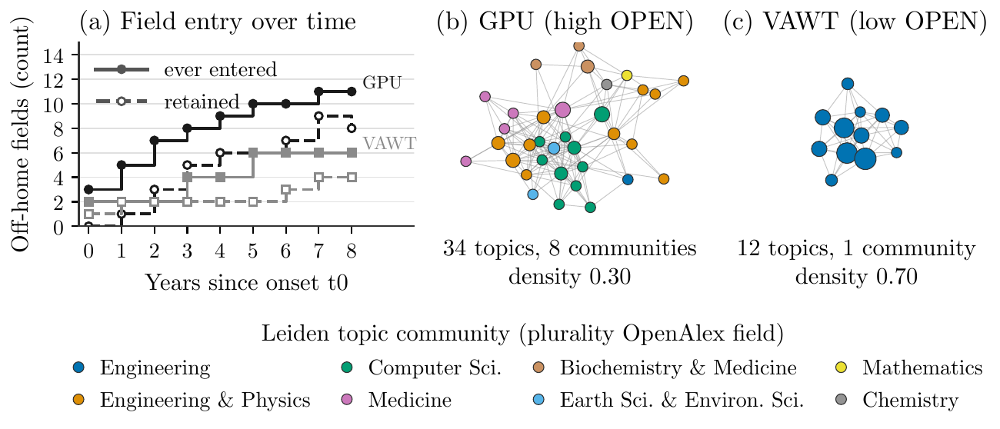

The finding
Some new scientific concepts stay inside the field that coined them; others turn up in a dozen fields within a decade. Popularity already predicts much of that difference. The question here is narrower: once early volume, growth and spread are held fixed, does the shape of a concept's early topic neighbourhood say anything more about how broadly it will travel?
The answer is a small yes. Concepts whose early partners are new and span many topic communities, measured by the , later reach more fields per paper () than the expects.
The association has the same sign in every body of concepts not used to choose the index, but it is weak, it adds almost nothing to forecasting accuracy, and it behaves like a fixed property of a concept's topic mix, not like turnover that happens year by year. The paper calls the evidence state a lead.
Does the association hold in every body of concepts?
Each row is one body of concepts. The measure is the correlation between the index and later breadth after the . Zero means no information beyond the controls.
How it works: one concept, start to finish
The stepper follows one real record from the fresh 2015–2017 onset cohort, the only body never used in any earlier step. Every value shown is the value the run stored for this concept, or is computed from those values with the frozen constants the run sealed before looking at outcomes.
What happens to a concept between its first papers and its breadth score?
Left and right arrow keys also move between stages while the stepper has focus.
Explore the evidence
Four views over the stored records. The first two use the 1,443 concepts of the 2015–2017 cohort one by one; the third shows how the estimate moves as controls are added; the fourth covers the second research question, how concepts pick the next field they enter.
What does the index do for one concept?
Pick a concept to set its early-window inputs beside two frozen predictions of its later breadth: the baseline alone, and B5 plus OPENhome. Both models were fitted on the earlier 12,499-concept frame and never refitted on this cohort.
Do high-OPEN concepts beat their popularity forecast?
Each point is one cohort concept. Up means the concept reached more fields than the B5 baseline predicted. Drag the cut to split concepts into high and low OPENhome and compare how far each group lands above the baseline. Click a point to open it in the browser above.
Everything in this view is computed in the page from the stored outcome and the stored B5 prediction. The rank correlation printed here is a plain Spearman correlation with the B5 residual, not the paper's partial Spearman, which residualises on the full control rung.
How much of the signal survives stricter controls, and how much is coupling?
On the 2015–2017 cohort the paper runs a six-rung ladder, R0 to R5, each rung adding controls. Three builds of the index are compared: , and .
Do concepts enter fields related to the fields that currently keep them?
A on field-entry events, fitted on an independent frame of 11,841 concepts. The coefficient is the change in log-odds of entering a field per SD of relatedness to the , after home relatedness, field size, entered density, gateway centrality, RCA density and volume density.
Pre-registered criteria for the frozen verdict
What does an open neighbourhood look like next to a closed one?
Seven matched pairs from the breadth-decomposition analysis: in each, two concepts with nearly the same early volume, one high and one low on OPENall. These are illustrations, not evidence.

Try it: compute OPENhome yourself
The index is simple enough to run exactly in the page. Each of the six components is clipped to the bounds frozen on the development frame, standardised with the frozen mean and SD, given its sign, and averaged. The two frozen prediction models are linear, so the page reproduces them too. Start from any concept's recorded inputs, then move a component and watch the index and the second prediction respond.
Which components drive a concept's OPEN score, and how far does the score move its forecast?
Where it fails
Three failures carry the most weight. The forecasting gain is close to zero. The temporal reading of the index, that concepts spread because their partners keep changing, could not be tested. And the field-entry result misses one of its own pre-registered criteria.
Is the churn signal real turnover, or a property of small yearly samples?
combines neighbourhood novelty and low . Each row rebuilds it under a different noise control, pooled over four bodies at rung R2. Tick a control to add its row.
What the paper says it does not show
- Effect size. OPENhome adds no forecasting gain over B5: in Spearman on the fresh cohort.
- Measurement noise. Split-half reliability of OPENhome is 0.49. The temporal-excess variants have split-half reliability below 0.05, so temporal versus static dispersion cannot be resolved at available sample sizes.
- Vocabulary bias. The legacy OpenAlex concept vocabulary is survivor-selected. The vocabulary-free Frame N is small (636 concepts), with pre-unseal power of 0.47; its frozen verdict is PARTIAL.
- Coupling. About half of the OPENall signal is mechanical coupling between the ego-network construction, which uses off-home papers, and the breadth outcome. OPENhome is free of this coupling but marginal.
- Domain heterogeneity. Life & Environment shows the weakest OPEN signal in the paper's indicator screen; the retained-frontier coefficient has I2 = 0.92 across held-out groups.
- Not causal. Early openness could reflect a concept's intrinsic generality, the diversity of the research community around it, or the breadth of the problems it addresses. A within-concept closure test is null on DEV and opposite-signed on held-out fields, so openness is a between-concept trait, not a within-concept mechanism.
- Prior unsealing. Held-out outcomes were read by two earlier experiments, so all non-selection bodies except the 2015–2017 cohort are robustness checks, and the six-body pool is descriptive.